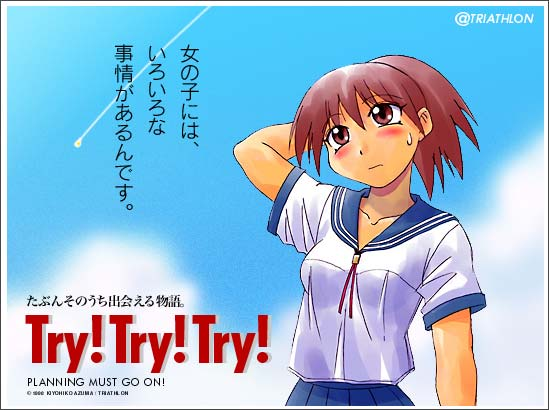

Despite announcing that serialization would begin on September 24, this was overwhelmingly impossible,
and I created this apology. I didn't even write the newly scheduled date, which is quite fascinating.
Creating an announcement image and thinking about the text to put on it was enjoyable in its own right,
and because I absolutely did not care at all, I thought it was good enough.
---------------------------------------------------------------------
When it comes to girls, they have a lot to deal with.
Perhaps we'll come across this story in due time.
Try! Try! Try!
PLANNING MUST GO ON!
---------------------------------------------------------------------